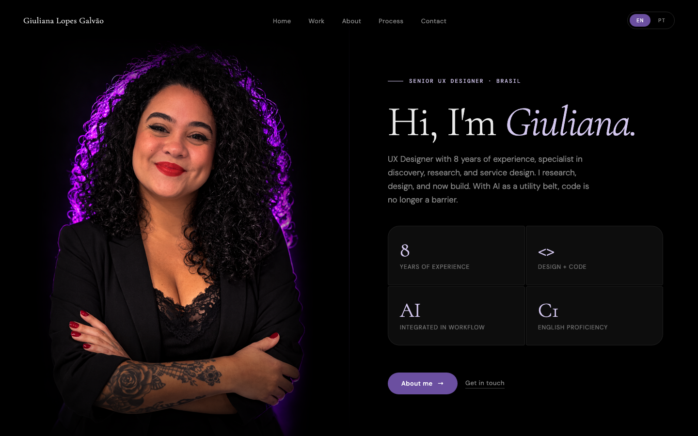
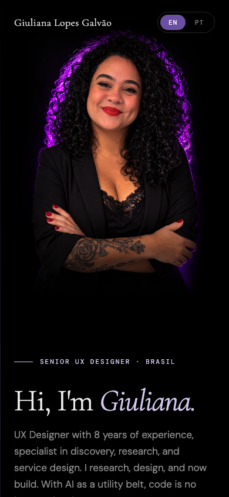
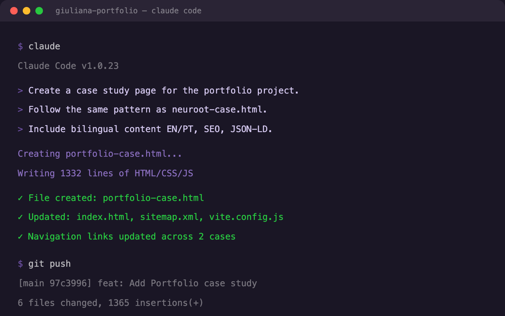
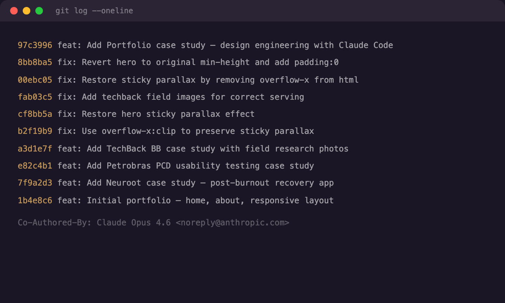
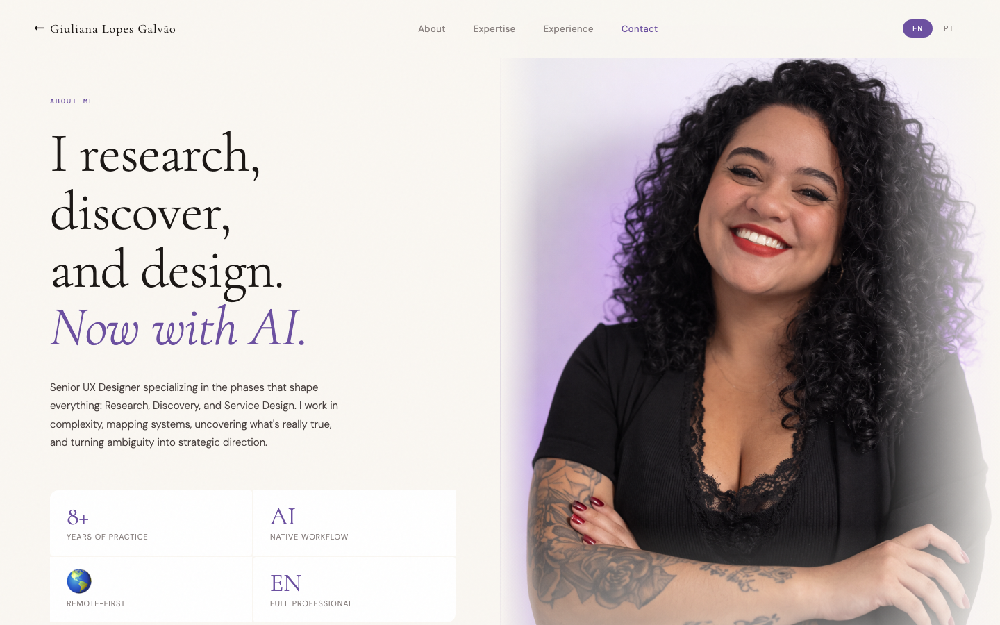
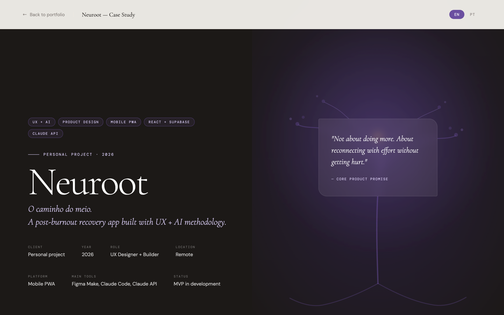
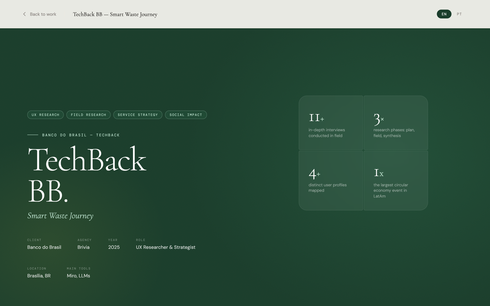

This Portfolio —
Built with AI.
Este Portfólio —
Construído com IA.
8 pages, 6 case studies, fully responsive and bilingual — designed and coded in 5 days using Claude Code as my engineering partner. 8 páginas, 6 case studies, totalmente responsivo e bilíngue — projetado e codificado em 5 dias usando Claude Code como parceiro de engenharia.
From idea to deploy —
without a developer.
Da ideia ao deploy —
sem desenvolvedor.
After 8 years as a UX Designer, AI changed the equation. Claude Code made it possible to go from idea to deploy without depending on templates, CMS, or an external developer. This portfolio became the first real test of a new capability: design engineering — the ability to go from design to production using AI as a building tool.
Após 8 anos como UX Designer, a IA mudou a equação. Claude Code tornou possível ir da ideia ao deploy sem depender de templates, CMS ou dev externo. Este portfólio se tornou o primeiro teste real de uma nova habilidade: design engineering — a capacidade de ir do design à produção usando IA como ferramenta de construção.
“If I can design the experience, why can’t I build it?” “Se eu consigo projetar a experiência, por que não posso construí-la?”


Home page — desktop & mobilePágina inicial — desktop & mobile
Conversational
development.
Desenvolvimento
conversacional.
Not “no-code” or “low-code” — it’s full code, with AI as the execution engine. I describe what I want, Claude Code generates it, I review in the browser, iterate with feedback, commit and deploy. The feedback loop shrunk from days to minutes.
Não é “no-code” nem “low-code” — é código completo, com IA como motor de execução. Descrevo o que quero, Claude Code gera, reviso no browser, itero com feedback, comito e faço deploy. O ciclo de feedback encolheu de dias para minutos.
Instructions in natural language, with visual references and acceptance criteria. Instruções em linguagem natural, com referências visuais e critérios de aceitação.
Claude Code generates HTML/CSS/JS, I validate in the browser and give feedback. Claude Code gera HTML/CSS/JS, eu valido no browser e dou feedback.
Adjust via conversation until correct, commit to Git, deploy on Vercel. Ajusto via conversa até ficar correto, comito no Git e faço deploy no Vercel.

Claude Code in action — generating, committing, deployingClaude Code em ação — gerando, commitando, fazendo deploy
Simple
by design.
Simples
por design.
Static HTML without frameworks — no React, no Next.js. Inline CSS in each page. Minimal JavaScript (lang toggle + scroll reveal). Why: maximum performance, zero dependencies, total control.
HTML estático sem frameworks — sem React, sem Next.js. CSS inline em cada página. JavaScript mínimo (lang toggle + scroll reveal). Porquê: performance máxima, zero dependências, controle total.
Generates and edits code via conversation. The AI engineering partner. Gera e edita código via conversa. O parceiro de engenharia IA.
23+ commits with Claude co-authorship. Full project history. 23+ commits com co-autoria Claude. Histórico completo do projeto.
Automatic deploy on every push. Global CDN for fast delivery. Deploy automático a cada push. CDN global para entrega rápida.
Structured product requirement docs and iterative prompt alignment. The design source of truth. Documentos de requisitos estruturados e alinhamento iterativo de prompts. A fonte de verdade do design.

Git history — every commit co-authored with ClaudeHistórico Git — cada commit co-autorado com Claude
What was
built.
O que foi
construído.



About, Neuroot case, and TechBack BB case — each page fully customAbout, case Neuroot e case TechBack BB — cada página totalmente customizada
What I
learned.
O que
aprendi.
Claude Code generates code, but I decide if the result is good. Visual validation, spacing, hierarchy — all of that remains a designer skill. Claude Code gera código, mas quem decide se o resultado está bom sou eu. A validação visual, o espaçamento, a hierarquia — tudo isso continua sendo skill de designer.
Instead of writing detailed specs and waiting for implementation, I describe what I want and iterate in real time. The feedback cycle shrunk from days to minutes. Em vez de escrever specs detalhadas e esperar pela implementação, eu descrevo o que quero e itero em tempo real. O ciclo de feedback encolheu de dias para minutos.
I don’t need to write CSS from memory. I need to know how to read, review, and give direction. AI executes, I steer. Não preciso saber escrever CSS de cor. Preciso saber ler, revisar e dar direção. A IA executa, eu dirijo.
Each commit tells a piece of the project’s story. The git log is the logbook. Cada commit conta um pedaço da história do projeto. O git log é o diário de bordo.
through complex products? Interessado em como eu penso
produtos complexos?